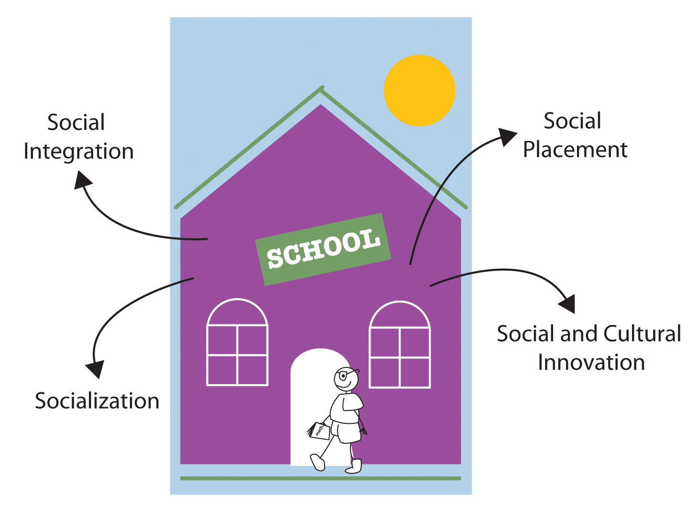

The major sociological perspectives on education fall nicely into the functional, conflict, and symbolic interactionist approaches (Ballantine & Hammack, 2012).Ballantine, J. H., & Hammack, F. M. (2012). The sociology of education: A systematic analysis (7th ed.). Upper Saddle River, NJ: Prentice Hall. Table 11.1 "Theory Snapshot" summarizes what these approaches say.
Table 11.1 Theory Snapshot
| Theoretical perspective | Major assumptions |
|---|---|
| Functionalism | Education serves several functions for society. These include (a) socialization, (b) social integration, (c) social placement, and (d) social and cultural innovation. Latent functions include child care, the establishment of peer relationships, and lowering unemployment by keeping high school students out of the full-time labor force. Problems in the educational institution harm society because all these functions cannot be completely fulfilled. |
| Conflict theory | Education promotes social inequality through the use of tracking and standardized testing and the impact of its “hidden curriculum.” Schools differ widely in their funding and learning conditions, and this type of inequality leads to learning disparities that reinforce social inequality. |
| Symbolic interactionism | This perspective focuses on social interaction in the classroom, on the playground, and in other school venues. Specific research finds that social interaction in schools affects the development of gender roles and that teachers’ expectations of pupils’ intellectual abilities affect how much pupils learn. Certain educational problems have their basis in social interaction and expectations. |
Functional theory stresses the functions that education serves in fulfilling a society’s various needs. Perhaps the most important function of education is socialization. If children are to learn the norms, values, and skills they need to function in society, then education is a primary vehicle for such learning. Schools teach the three Rs (reading, ’riting, ’rithmetic), as we all know, but they also teach many of the society’s norms and values. In the United States, these norms and values include respect for authority, patriotism (remember the Pledge of Allegiance?), punctuality, and competition (for grades and sports victories).
A second function of education is social integration. For a society to work, functionalists say, people must subscribe to a common set of beliefs and values. As we saw, the development of such common views was a goal of the system of free, compulsory education that developed in the nineteenth century. Thousands of immigrant children in the United States today are learning English, US history, and other subjects that help prepare them for the workforce and integrate them into American life.
A third function of education is social placement. Beginning in grade school, students are identified by teachers and other school officials either as bright and motivated or as less bright and even educationally challenged. Depending on how they are identified, children are taught at the level that is thought to suit them best. In this way, they are presumably prepared for their later station in life. Whether this process works as well as it should is an important issue, and we explore it further when we discuss school tracking later in this chapter.
Social and cultural innovation is a fourth function of education. Our scientists cannot make important scientific discoveries and our artists and thinkers cannot come up with great works of art, poetry, and prose unless they have first been educated in the many subjects they need to know for their chosen path.
Figure 11.6 The Functions of Education
Schools ideally perform many important functions in modern society. These include socialization, social integration, social placement, and social and cultural innovation.
Education also involves several latent functions, functions that are by-products of going to school and receiving an education rather than a direct effect of the education itself. One of these is child care: Once a child starts kindergarten and then first grade, for several hours a day the child is taken care of for free. The establishment of peer relationships is another latent function of schooling. Most of us met many of our friends while we were in school at whatever grade level, and some of those friendships endure the rest of our lives. A final latent function of education is that it keeps millions of high school students out of the full-time labor force. This fact keeps the unemployment rate lower than it would be if they were in the labor force.
Because education serves so many manifest and latent functions for society, problems in schooling ultimately harm society. For education to serve its many functions, various kinds of reforms are needed to make our schools and the process of education as effective as possible.
Conflict theory does not dispute the functions just described. However, it does give some of them a different slant by emphasizing how education also perpetuates social inequality (Ballantine & Hammack, 2012).Ballantine, J. H., & Hammack, F. M. (2012). The sociology of education: A systematic analysis (7th ed.). Upper Saddle River, NJ: Prentice Hall. One example of this process involves the function of social placement. When most schools begin tracking their students in grade school, the students thought by their teachers to be bright are placed in the faster tracks (especially in reading and arithmetic), while the slower students are placed in the slower tracks; in high school, three common tracks are the college track, vocational track, and general track.
Such tracking does have its advantages; it helps ensure that bright students learn as much as their abilities allow them, and it helps ensure that slower students are not taught over their heads. But conflict theorists say that tracking also helps perpetuate social inequality by locking students into faster and lower tracks. Worse yet, several studies show that students’ social class and race and ethnicity affect the track into which they are placed, even though their intellectual abilities and potential should be the only things that matter: White, middle-class students are more likely to be tracked “up,” while poorer students and students of color are more likely to be tracked “down.” Once they are tracked, students learn more if they are tracked up and less if they are tracked down. The latter tend to lose self-esteem and begin to think they have little academic ability and thus do worse in school because they were tracked down. In this way, tracking is thought to be good for those tracked up and bad for those tracked down. Conflict theorists thus say that tracking perpetuates social inequality based on social class and race and ethnicity (Ansalone, 2010).Ansalone, G. (2010). Tracking: Educational differentiation or defective strategy. Educational Research Quarterly, 34(2), 3–17.
Conflict theorists add that standardized tests are culturally biased and thus also help perpetuate social inequality (Grodsky, Warren, & Felts, 2008).Grodsky, E., Warren, J. R., & Felts, E. (2008). Testing and social stratification in American education. Annual Review of Sociology, 34(1), 385–404. According to this criticism, these tests favor white, middle-class students whose socioeconomic status and other aspects of their backgrounds have afforded them various experiences that help them answer questions on the tests.
A third critique of conflict theory involves the quality of schools. As we will see later in this chapter, US schools differ mightily in their resources, learning conditions, and other aspects, all of which affect how much students can learn in them. Simply put, schools are unequal, and their very inequality helps perpetuate inequality in the larger society. Children going to the worst schools in urban areas face many more obstacles to their learning than those going to well-funded schools in suburban areas. Their lack of learning helps ensure they remain trapped in poverty and its related problems.
In a fourth critique, conflict theorists say that schooling teaches a hidden curriculumA set of values and beliefs learned in school that support the status quo, including the existing social hierarchy., by which they mean a set of values and beliefs that support the status quo, including the existing social hierarchy (Booher-Jennings, 2008).Booher-Jennings, J. (2008). Learning to label: Socialisation, gender, and the hidden curriculum of high-stakes testing. British Journal of Sociology of Education, 29, 149–160. Although no one plots this behind closed doors, our schoolchildren learn patriotic values and respect for authority from the books they read and from various classroom activities.
A final critique is historical and concerns the rise of free, compulsory education during the nineteenth century (Cole, 2008).Cole, M. (2008). Marxism and educational theory: Origins and issues. New York, NY: Routledge. Because compulsory schooling began in part to prevent immigrants’ values from corrupting “American” values, conflict theorists see its origins as smacking of ethnocentrism (the belief that one’s own group is superior to another group). They also criticize its intention to teach workers the skills they needed for the new industrial economy. Because most workers were very poor in this economy, these critics say, compulsory education served the interests of the upper/capitalist class much more than it served the interests of workers.
Symbolic interactionist studies of education examine social interaction in the classroom, on the playground, and in other school venues. These studies help us understand what happens in the schools themselves, but they also help us understand how what occurs in school is relevant for the larger society. Some studies, for example, show how children’s playground activities reinforce gender-role socialization. Girls tend to play more cooperative games, while boys play more competitive sports (Thorne, 1993)Thorne, B. (1993). Gender play: Girls and boys in school. New Brunswick, NJ: Rutgers University Press. (see Chapter 4 "Gender Inequality").
Assessing the Impact of Small Class Size
Do elementary school students fare better if their classes have fewer students rather than more students? It is not easy to answer this important question, because any differences found between students in small classes and those in larger classes might not necessarily reflect class size. Rather, they may reflect other factors. For example, perhaps the most motivated, educated parents ask that their child be placed in a smaller class and that their school goes along with this request. Perhaps teachers with more experience favor smaller classes and are able to have their principals assign them to these classes, while new teachers are assigned larger classes. These and other possibilities mean that any differences found between the two class sizes might reflect the qualities and skills of students and/or teachers in these classes, and not class size itself.
For this reason, the ideal study of class size would involve random assignment of both students and teachers to classes of different size. (Recall that Chapter 1 "Understanding Social Problems" discusses the benefits of random assignment.) Fortunately, a notable study of this type exists.
The study, named Project STAR (Student/Teacher Achievement Ratio), began in Tennessee in 1985 and involved 79 public schools and 11,600 students and 1,330 teachers who were all randomly assigned to either a smaller class (13–17 students) or a larger class (22–25 students). The random assignment began when the students entered kindergarten and lasted through third grade; in fourth grade, the experiment ended, and all the students were placed into the larger class size. The students are now in their early thirties, and many aspects of their educational and personal lives have been followed since the study began.
Some of the more notable findings of this multiyear study include the following:
Why did small class size have these benefits? Two reasons seem likely. First, in a smaller class, there are fewer students to disrupt the class by talking, fighting, or otherwise taking up the teacher’s time. More learning can thus occur in smaller classes. Second, kindergarten teachers are better able to teach noncognitive skills (cooperating, listening, sitting still) in smaller classes, and these skills can have an impact many years later.
Regardless of the reasons, it was the experimental design of Project STAR that enabled its findings to be attributed to class size rather than to other factors. Because small class size does seem to help in many ways, the United States should try to reduce class size in order to improve student performance and later life outcomes.
Sources: Chetty et al., 2011; Schanzenbach, 2006Chetty, R., Friedman, J. N., Hilger, N., Saez, E., Schanzenbach, D. W., & Yagan, D. (2011). How does your kindergarten classroom affect your earnings? Evidence from Project STAR. Quarterly Journal of Economics, 126, 1593–1660; Schanzenbach, D. W. (2006). What have researchers learned from Project STAR? (Harris School Working Paper—Series 06.06).
Another body of research shows that teachers’ views about students can affect how much the students learn. When teachers think students are smart, they tend to spend more time with these students, to call on them, and to praise them when they give the right answer. Not surprisingly, these students learn more because of their teachers’ behavior. But when teachers think students are less bright, they tend to spend less time with these students and to act in a way that leads them to learn less. Robert Rosenthal and Lenore Jacobson (1968)Rosenthal, R., & Jacobson, L. (1968). Pygmalion in the classroom. New York, NY: Holt. conducted a classic study of this phenomenon. They tested a group of students at the beginning of the school year and told their teachers which students were bright and which were not. They then tested the students again at the end of the school year. Not surprisingly, the bright students had learned more during the year than the less bright ones. But it turned out that the researchers had randomly decided which students would be designated bright and less bright. Because the “bright” students learned more during the school year without actually being brighter at the beginning, their teachers’ behavior must have been the reason. In fact, their teachers did spend more time with them and praised them more often than was true for the “less bright” students. This process helps us understand why tracking is bad for the students tracked down.
Other research in the symbolic interactionist tradition focuses on how teachers treat girls and boys. Many studies find that teachers call on and praise boys more often (Jones & Dindia, 2004).Jones, S. M., & Dindia, K. (2004). A meta-analystic perspective on sex equity in the classroom. Review of Educational Research, 74, 443–471. Teachers do not do this consciously, but their behavior nonetheless sends an implicit message to girls that math and science are not for them and that they are not suited to do well in these subjects. This body of research has stimulated efforts to educate teachers about the ways in which they may unwittingly send these messages and about strategies they could use to promote greater interest and achievement by girls in math and science (Battey, Kafai, Nixon, & Kao, 2007).Battey, D., Kafai, Y., Nixon, A. S., & Kao, L. L. (2007). Professional development for teachers on gender equity in the sciences: Initiating the conversation. Teachers College Record, 109(1), 221–243.